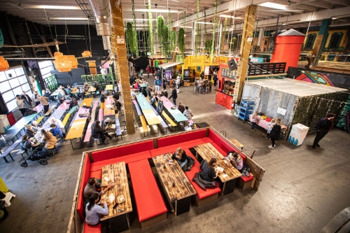

Kontakt os her
Selvom vi er fremragende til telepati, er der nemmere måder at kontakte os på.
Administrative timer
Mandag til fredag: 10:00 - 16:00
Lørdag til søndag: Lukket

Mandag til fredag: 10:00 - 16:00
Lørdag til søndag: Lukket